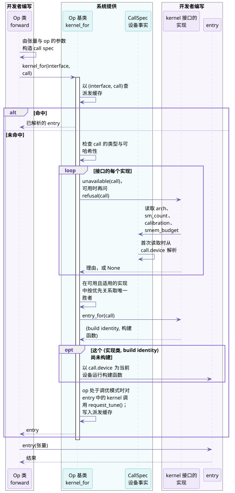

op 如何选择 kernel¶
一个 TileOPs op 可以有多个 kernel，每个 kernel 服务一部分调用。本指南说明 op 在一次调用中如何选中 kernel，以及新增一个 kernel 要写什么。本指南面向两类读者：在 TileOPs 中新增 kernel 或 op 的开发者，以及为第三方 backend 替换或新增 kernel 的作者。各项设计的理由见设计文档 Op Interface Design § Kernel selection。
本页说明选择的过程与术语，另外两页分别是：
- 如何为 op 新增 kernel：两步的写法、默认规则、新开 kernel 接口、测试与常见报错；
- backend 如何接入 TileOPs：
kernel_map=、register_implementation与 target。
1. 谁来选 kernel：op 选接口，派发机制选实现¶
op 先按语义选定一个 kernel 接口，派发机制再按调用的 shape、dtype 与设备，从这个接口的实现中选出一个实现。
表 1 op 选接口与派发机制选实现
| No. | 层 | 由谁决定 | 依据 | 写在哪里 |
|---|---|---|---|---|
| 1 | 选 kernel 接口 | op | 语义，即调用契约不同之处，例如训练与推理 | op 的 _eager_forward，调用 kernel_for 时给出接口名 |
| 2 | 选实现 | 派发机制，所有 op 共用 | 每个实现声明的可用性、适用范围与优先关系 | 选择算法在 src/tileops/ops/op_base.py；各实现的声明写在自己的 kernel 类上 |
以 BatchNormFwdOp 为例：op 按构造参数 training 选择接口 batch_norm_fwd_train 或 batch_norm_fwd_infer；训练接口有四个实现，派发机制按 batch、channel 数与空间尺寸选中其中一个。
2. 一次调用如何找到 kernel¶
op 每次调用构造一个 call spec，它记录这次调用中影响选择与构建的事实，然后调用 self.kernel_for(interface, call)：
# src/tileops/ops/norm/layer_norm.py
call = LayerNormCall(device=x.device, n=math.prod(ns), eps=self.eps, dtype=x.dtype)
return self.kernel_for("layer_norm", call)(x, weight, bias)

图 1 一次 kernel_for 调用的命中与未命中路径。紫色为开发者编写的部分，青色为系统提供的部分。
- 命中：以
(interface, call)查一次缓存，直接返回已解析的 entry，不询问任何实现，也不读取设备属性。 - 未命中：派发机制按以下顺序选择，结果写入缓存：
- 去掉在调用设备上不能运行的实现，依据
devices与supported_archs； - 去掉不服务这次调用的实现，依据
applies或refusal； - 在剩下的实现中选唯一的胜者：
general的实现低于其他所有实现，其余按preferred_over比较； - 调用胜者的
entry_for(call)，得到 build identity 与构建函数，再构建或复用 entry。在同一个 interface 内，只有选中同一实现类且 build identity 相同的调用才共用 entry；一个 entry 可以包含一个或多个 kernel。
没有任何 key 能在调用设备类型上运行时，报 in-tree kernels do not run on（OpNotAvailableError）；有 key 支持这种设备类型、但没有实现同时可用且适用时，报 no implementation serves this call；剩下多个互相没有优先关系的实现时，报 dispatch is ambiguous。选择不依赖声明顺序，也没有数值优先级。
3. 新增一个 kernel 要做的两件事¶
为已有的 kernel 接口新增一个 kernel，TileOPs 开发者与 backend 作者都做以下两件事：
表 2 新增一个 kernel 的两步
| No. | 步骤 | TileOPs 开发者 | backend 作者 | 说明所在 |
|---|---|---|---|---|
| 1 | 登记实现 | 类继承 kernel 接口，加入 op 的 kernel_types |
类继承 kernel 接口，调用 register_implementation(op, key, cls) |
新增 kernel 1 |
| 2 | 声明实现服务哪些调用 | 写 applies；只在与另一个非 general 实现重叠时写 preferred_over |
同左 | 新增 kernel 2 |
实现不声明 devices、supported_archs、applies、general 与 preferred_over 时，默认在所有架构的 CUDA 设备上可用，服务全部调用，与其他实现没有优先关系。只有一个实现的接口因此只需继承接口。
backend 还可以替换一个已有 key 背后的实现，或替换整个 op，见 backend 如何接入 TileOPs。
4. 本指南使用的术语¶
表 3 术语
| No. | 术语 | 含义 | 代码中的写法 |
|---|---|---|---|
| 1 | kernel 接口 | op 调用 kernel 的一个位置，规定这个位置的调用契约 | KernelInterface 的子类；op 的 interfaces |
| 2 | 实现 | 继承某个 kernel 接口的 kernel 类，以一个 key 登记 | Kernel 子类；kernel_types 的键 |
| 3 | call spec | 一次调用中影响选择与构建的不可变事实 | CallSpec 的冻结 dataclass 子类 |
| 4 | 设备事实 | 架构、SM 数、设备所属的标定板卡型号，以及每个 block 可用的共享内存上限，未命中时才从调用设备读取 | arch、sm_count、calibration、smem_budget |
| 5 | 可用性 | 实现能在哪些设备上运行 | devices、supported_archs |
| 6 | 适用范围 | 实现服务哪些调用 | applies、refusal |
| 7 | 优先关系 | 多个实现都可用且都适用时谁被选中 | general、preferred_over |
| 8 | build identity 与 entry | 决定两次构建是否相同的值，以及构建出的 entry，它包含一个或多个 kernel | entry_for 返回的二元组 |